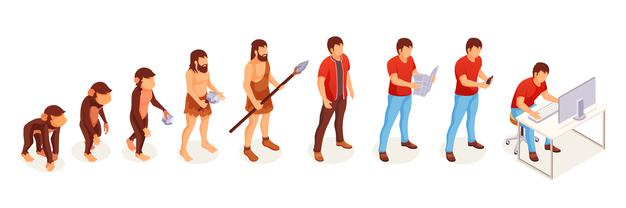
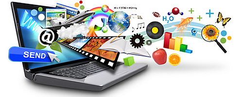
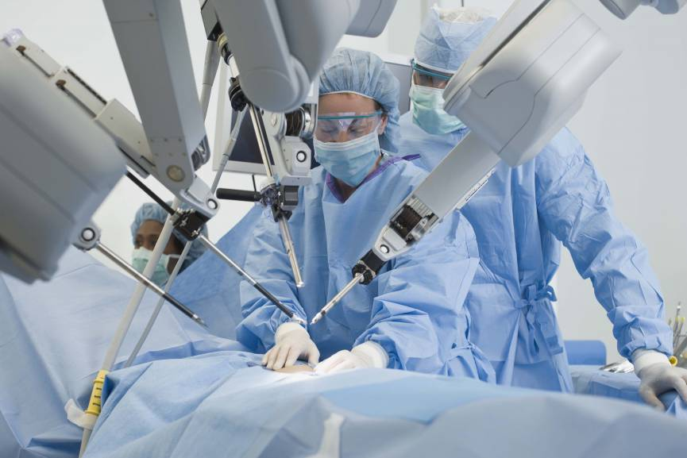

Technology is simply known as the ocean of skills, techniques and method used in the production of goods and services to
produce something new every day. Technology can also be said as never ending updates. In todays world, every people are
dependent upon the technology. Without technology it is very difficult for human being to do their works. Technology has
made a great change in todays world. The use of electronic devices and their connections through various networking mediums
has made it impossible to determine the future of technology. With every new invention our life is getting more busy and
social. We are getting addicted in the technological advancement and becoming unable to a small thing without using technology.

Technology has an impact on human life by introducing new threats and benefits to our lives. New technologies have been a
huge support in the classroom and in the medical field. Technology also plays a significant role in workplace monitoring,
which many people are unaware of. In the classroom, technological developments have been beneficial.Students like technology
because they believe it makes learning more engaging and enjoyable, especially when laptops and tablets are used. Virtual
education, such as through a video, can make subjects that students find tough or even boring more intriguing. Since this
modern world is so reliant on technology, students who use it are fully prepared for the future and for the developing
knowledge - based economy. It's also a popular misunderstanding among students that technology improves their memory. Students
can now learn at their own pace due to modern technologies. The technology has both positive and negative impacts which depends
upon the use of technology done by the user.

Some of the stuffs affected by technology are described below.
- Education 
- Communication
- Health
The technology has changed the way of education. Nowadays the students are taught through the digital medium with the help of smart phones and computers. There are online schools that provides the degree to the student without the physical apperance of the student in the school. The e-learning modules and the online learning opportunities has been increased. Learning is no longer confined in four wall of the institution and physical boundaries aren't much important today. Online schools, e-learning programmes and educational content brings in flexibility and convenience for the students.
The way of communication is changed due to the technology. In the past, the people have to be physically present or have to wait for many days to receive a single letter to communicate. The different elctotronic communication tools like social networking websites, emails, voice mails, and video conferencing has been introduced. Such tools ha shelpd us to save time aand communicate with people in very few seconds. The people can see each other without being physically present.

The healthcare industry has been greatly influenced by technological advancements. Diagnostic tools have improved, allowing doctors to detect health concerns earlier, increasing the chances of successful life-saving therapies. Vaccines have been extremely effective, virtually eliminating illnesses like measles, diphtheria, and smallpox, which used to cause major crises.Patients can now manage chronic disorders that were once painful and life-threatening, such as diabetes and hypertension, thanks to technology. Medical progress has extended people's lives and improved their standard of living all across the world.